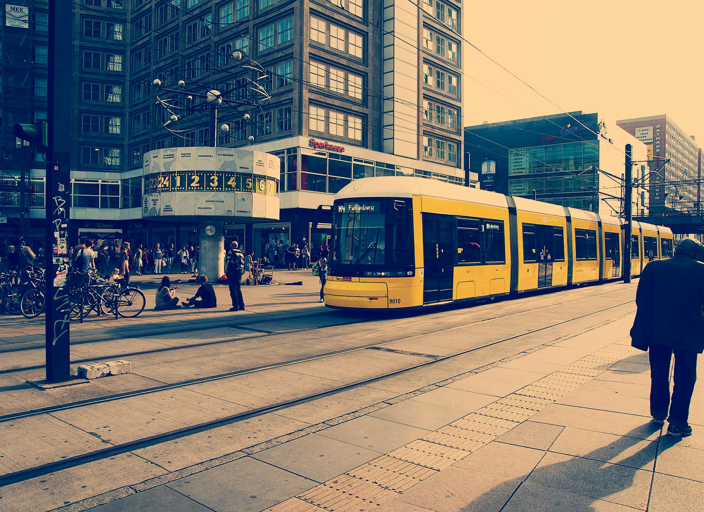

Beer Cities Public Transit System
Welcome to the public transit system that serves Grand Rapids, Michigan. We're proud to offer a variety of transportation options such as trains, buses, and bike/scooter share. Our goal is to provide safe, reliable, and affordable transportation to the residents and visitors of Grand Rapids.
